사주·관상·손금 종합 리포트
생년월일, 이름, MBTI, 혈액형, 직업 정보와 관상·손금 선택을 바탕으로
성향, 직업 적성, 재물운, 투자 성향을 종합 분석합니다.
무료 종합 분석
1 기본정보
2 성향정보
3 관상
4 손금
5 리포트
🧭
기본 정보
사주 계산에 필요한 정보를 입력하세요.
※ 한자 없이 한글 이름의 초성·모음·받침 흐름을 참고해 보조 분석합니다.
음력 자동 변환은 현재 지원하지 않습니다. 음력 생일은 양력으로 변환 후 입력하면 더 정확합니다.
🧩
추가 성향 정보
MBTI, 혈액형, 직업 정보를 함께 반영합니다.
🙂
관상 선택
가장 비슷한 얼굴 특징을 선택하세요.
이마 모양
사고력·초년운 참고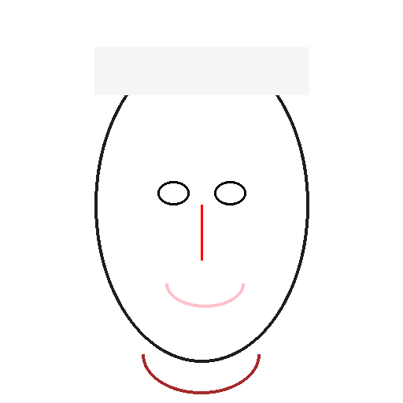
넓은 이마지혜·사고력 보통 이마균형·현실적
보통 이마균형·현실적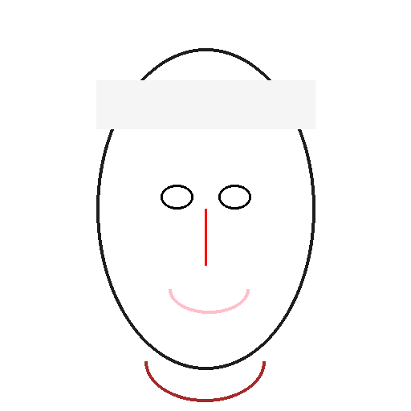
좁은 이마집중력·신중함눈 모양
집중력·대인성 참고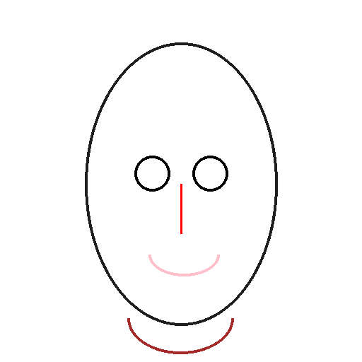
크고 또렷한 눈활동적·리더십 보통 눈온화함·무난함
보통 눈온화함·무난함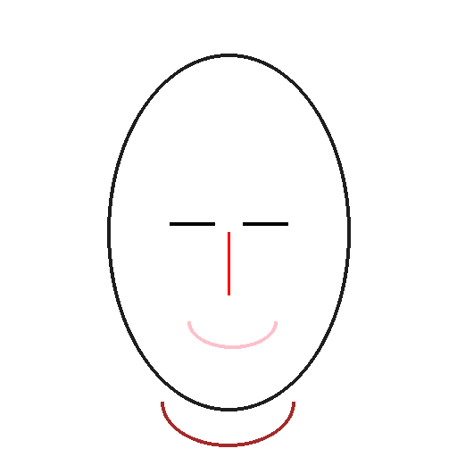
작은 눈신중·분석적코 모양
재물감·중심성 참고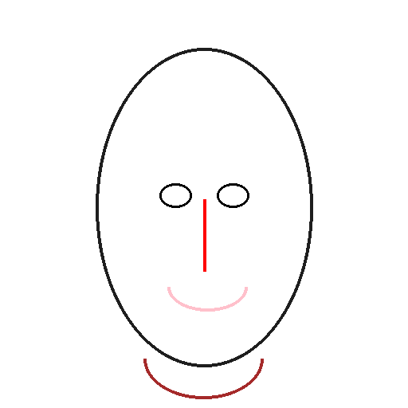
높고 오뚝한 코재물운·성취욕 보통 코안정적·균형감
보통 코안정적·균형감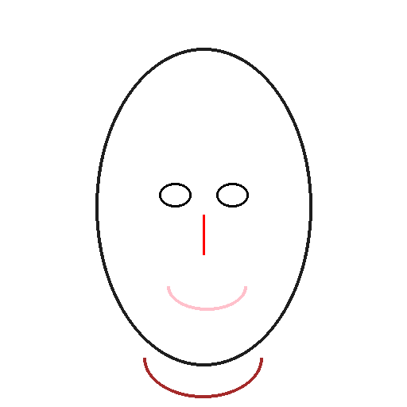
낮은 코소박함·검소함입 모양
표현력·관계운 참고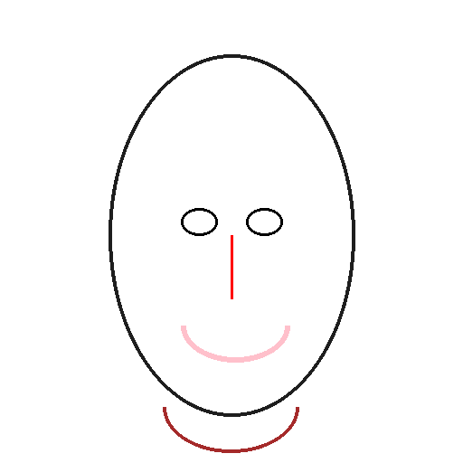
입술이 두툼한 편정열적·사교적보통 입술중립적·무난함
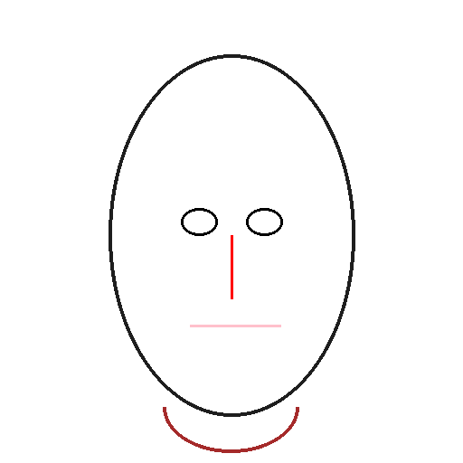
입술이 얇은 편이성적·표현력턱 모양
의지력·말년운 참고 둥근 턱온화함·책임감
둥근 턱온화함·책임감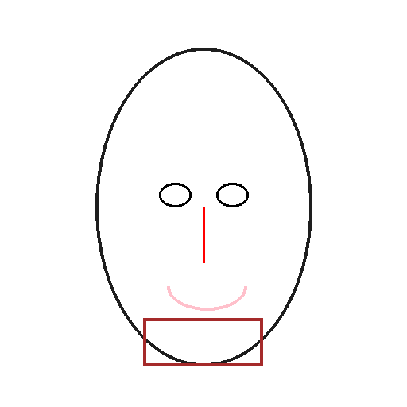
각진 턱결단력·책임감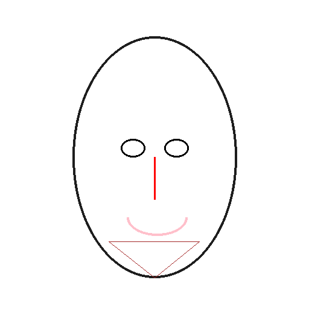
뾰족한 턱자립심·추진력✋
손금 선택
오른쪽 안내 이미지를 참고해 가장 비슷한 선을 고르세요.
생명선
엄지 주변 곡선깊고 선명함체력·회복력
연하고 흐림컨디션 관리
끊김 있음변화·전환점
두뇌선
손바닥 중앙 가로선곧고 길게현실 판단
아래로 휘어짐상상력·감성
짧은 편결단·행동력
감정선
손가락 아래 가로선선명·균형감정 안정
잔선 많음감수성
짧은 편현실 판단
운명선
중앙 세로선뚜렷함목표·직업운
약하거나 흐림다양한 경험
잘 안 보임자유로운 선택
손금 주요선 안내
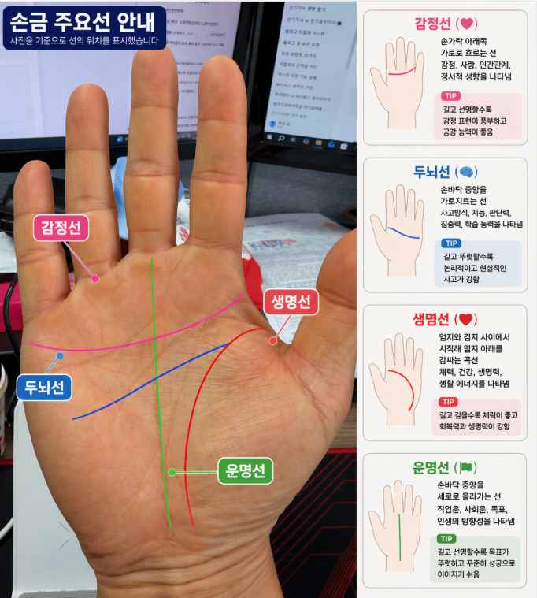
● 생명선엄지 주변을 감싸는 곡선입니다.● 두뇌선손바닥 중앙을 가로지르는 선입니다.● 감정선손가락 아래쪽을 가로지르는 선입니다.● 운명선손바닥 중앙을 세로로 올라가는 선입니다.